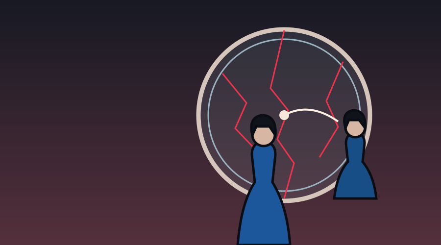
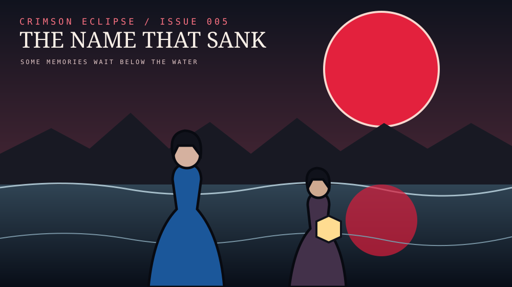
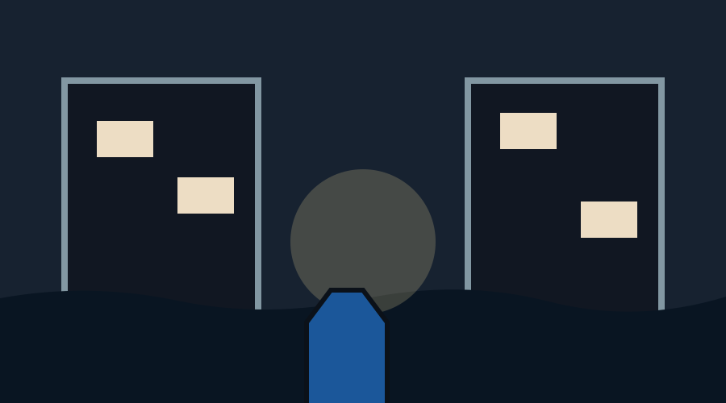
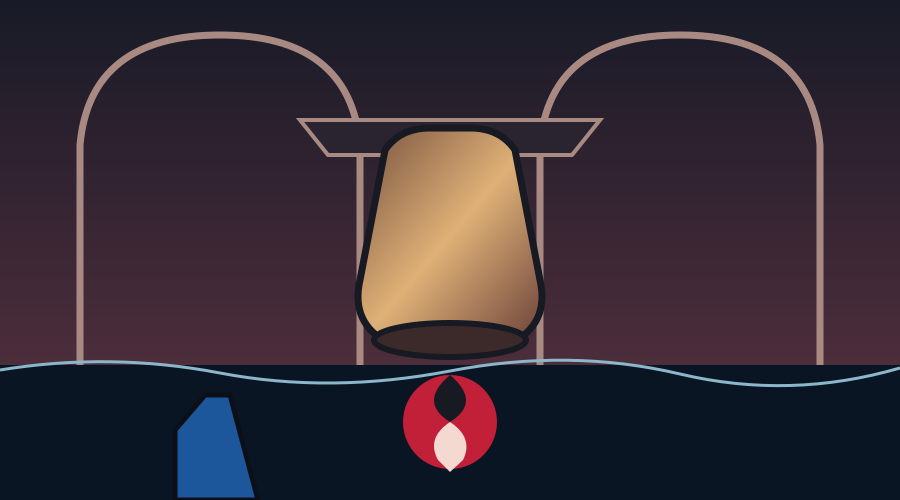
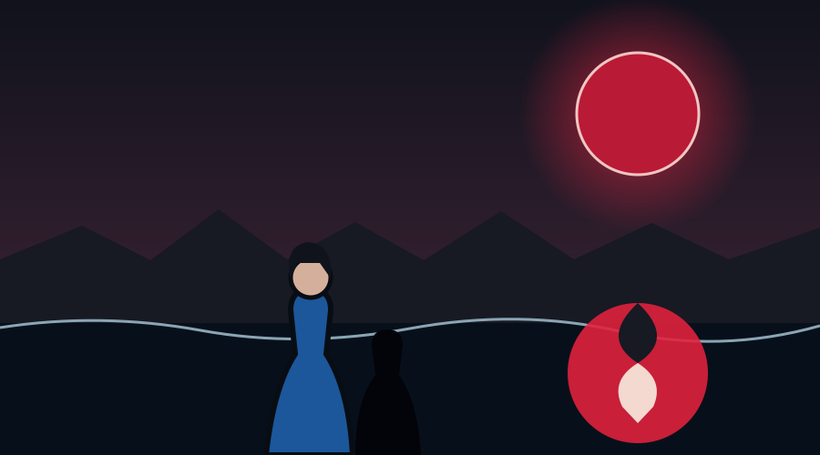

01 / THE GLASS REMEMBERS
“What did the gate take?” “Your grandmother’s laugh,” her double replies.
CHAPTER 05
The sea remembers every voice.

The other Mara waits behind glass. Below Noctis, the bell trembles.

“What did the gate take?” “Your grandmother’s laugh,” her double replies.

Sable shows Mara the forgotten names. Orin admits, “I guarded the bell—and the lie.”

Mara remembers her grandmother’s laugh. “North,” she whispers. The bell rings without moving.

A second moon opens under the water. A voice like Mara’s says, “Thank you.” Three taps answer from within.
CLIFFHANGER
“Now say your name.”